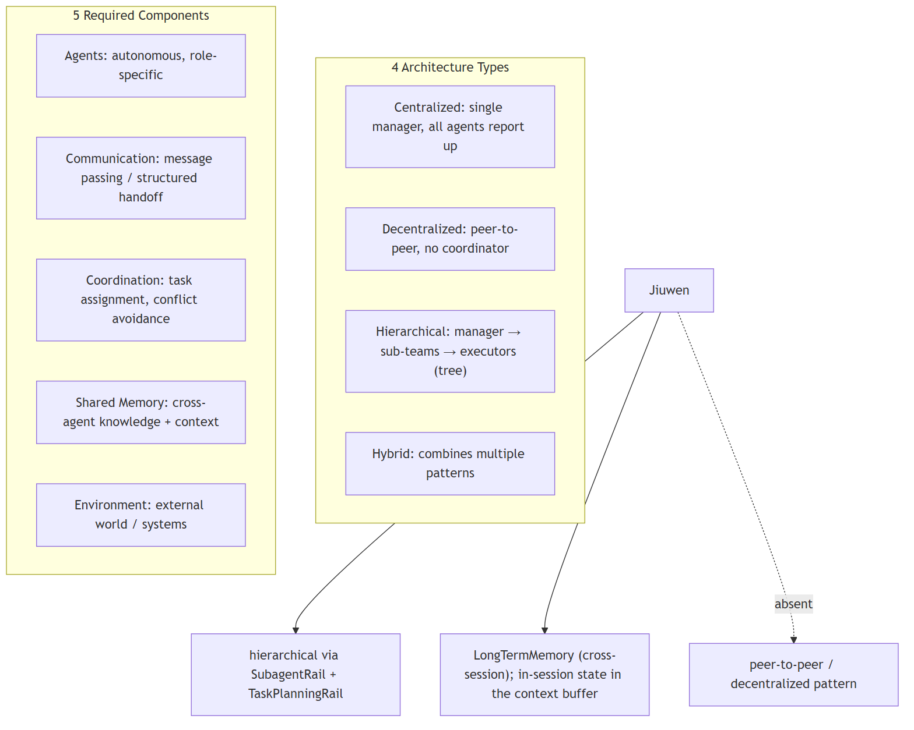
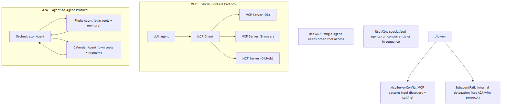
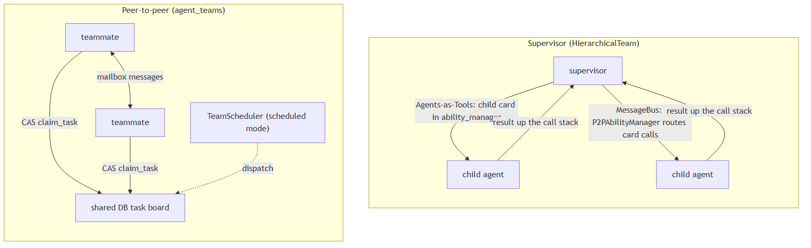
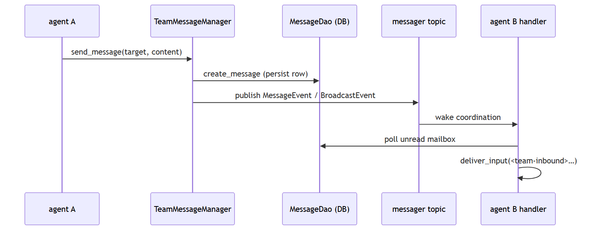
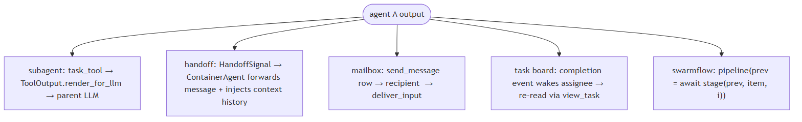
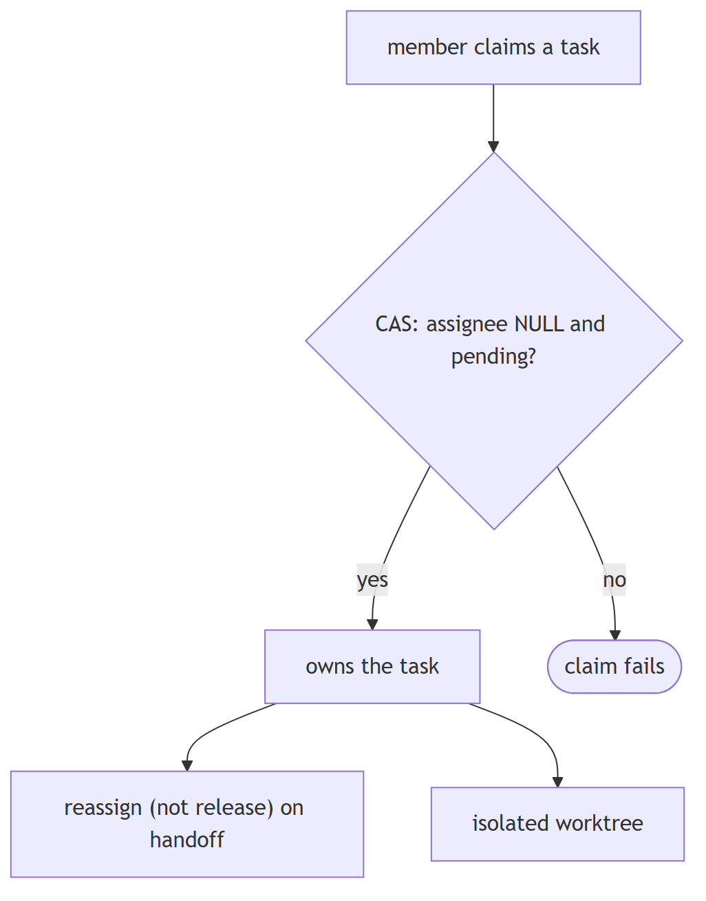
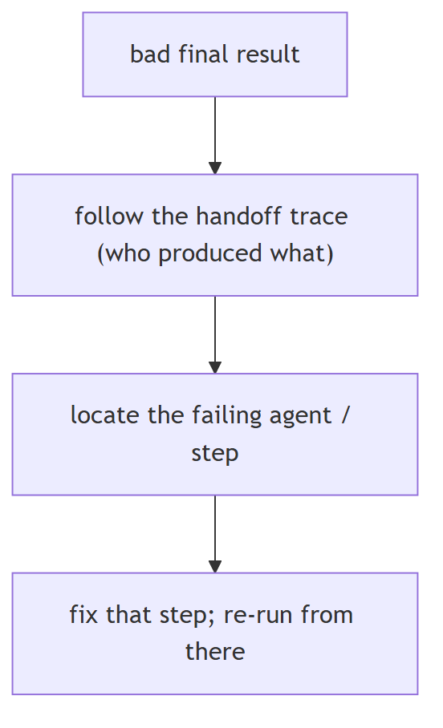
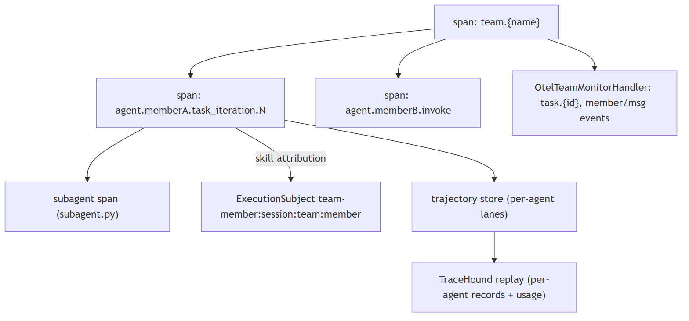
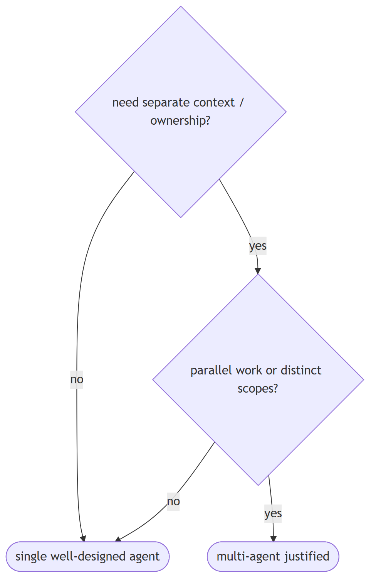

Multi-agent systems
1. What are the four multi-agent architecture types and what components does every MAS need?
Design intermediate
TL;DR. Centralized, decentralized, hierarchical, or hybrid — every MAS also needs agents, communication, coordination, shared memory, and environment.
Key points.
- Centralized: single manager, all agents report up — simple, debuggable, single point of failure
- Decentralized: peer-to-peer — resilient, harder to ensure consistency
- Hierarchical: manager agents oversee sub-agent teams (tree of authority) — handles complexity, adds delegation latency
- Hybrid: combines patterns; e.g. centralized orchestrator with peer-to-peer specialists beneath
- 5 components every MAS needs: agents, communication, coordination, shared memory, environment. Jiuwen: hierarchical via SubagentRail; LongTermMemory + EphemeralMemory for shared state; no peer-to-peer pattern
Concept. Multi-agent systems (MAS) come in four structural patterns: (1) Centralized — all agents report to a single manager/supervisor that assigns tasks and aggregates results. Simple to reason about, single point of failure. (2) Decentralized — agents communicate directly with each other (peer-to-peer) with no central coordinator. Resilient but harder to ensure consistency. (3) Hierarchical — manager agents oversee sub-agent teams, which may themselves have managers — a tree of authority. Natural for complex decomposition (planner → domain-specialist teams → executors). (4) Hybrid — combines patterns; e.g., a centralized orchestrator with peer-to-peer specialist agents underneath. Every MAS needs five components regardless of architecture: agents (autonomous entities with specific roles), communication (message passing — structured output, shared state, or explicit handoff), coordination (how tasks are assigned and conflicts avoided), shared memory (knowledge and context accessible across agents), and environment (the external world or system agents act on). Choosing an architecture is a tradeoff: centralized is debuggable but bottlenecked; decentralized is resilient but harder to coordinate; hierarchical handles complexity but adds latency through multiple delegation layers.

In Jiuwen. Architecture: hierarchical via SubagentRail (agent-core/openjiuwen/harness/rails/subagent/subagent_rail.py:1) and TaskPlanningRail (agent-core/openjiuwen/harness/rails/task_planning_rail.py:1). No peer-to-peer pattern exists. 5 components: agents (SubagentSpec configs), communication (SubagentRequest/SubagentResponse schemas), coordination (TaskPlanningRail task decomposition), shared memory (LongTermMemory at agent-core/openjiuwen/core/memory/long_term_memory.py:69 + EphemeralMemory), environment (external APIs via ToolCard and MCP servers).
Under the hood
Implementation
The SubagentRail pattern is hierarchical: a top-level agent delegates to specialized sub-agents via SubagentRail, which itself can call further sub-agents. TaskPlanningRail breaks the task and generates a plan before delegation. Shared long-term memory is LongTermMemory; within-session state lives in the context buffer rather than a separate memory class. Delegation payloads are handled by the subagent runtime (SubagentRuntimeConfig/SubagentInstance). There is no peer-to-peer (decentralized) pattern; all coordination flows through the top-level agent.
Code anchors
| Code anchor | What it points to |
|---|---|
agent-core/openjiuwen/harness/rails/subagent/subagent_rail.py:1 |
hierarchical delegation |
agent-core/openjiuwen/harness/rails/task_planning_rail.py:1 |
TaskPlanningRail (planner layer) |
agent-core/openjiuwen/core/memory/long_term_memory.py:69 |
shared long-term memory |
agent-core/openjiuwen/harness/subagent_runtime/config.py:22 |
SubagentRuntimeConfig (delegation payloads) |
2. What is the difference between MCP and A2A, and when do you use each?
Compare intermediate
TL;DR. MCP = one LLM + many tools (centralized control); A2A = agents talk to agents (decentralized execution). Use both together in production: MCP within agents, A2A between them.
Key points.
- MCP (Model Context Protocol): standardized interface for a single LLM to access external tools — databases, browsers, APIs, code. One brain, centralized tool access.
- A2A (Agent-to-Agent Protocol): communication protocol for multi-agent systems — each agent has own tools/memory/reasoning; orchestrator delegates, never touches tools directly
- Key difference: MCP = model in control; A2A = agents in control
- Use MCP for single-agent assistants with broad tool access; add A2A when specialized agents need to run concurrently
- Jiuwen: MCP via McpServerConfig; A2A-style delegation via SubagentRail (internal, not A2A wire protocol)
Concept. MCP (Model Context Protocol) is a standardized interface for connecting a single LLM to external tools — the model stays in control, and MCP provides a universal connector layer so the model can call databases, browsers, APIs, and code tools without custom integration for each. One brain, many tools, centralized control. A2A (Agent-to-Agent Protocol) is a communication protocol for multi-agent systems — agents collaborate as peers, each with its own tools, memory, and reasoning loop; an orchestrator delegates to specialized agents rather than touching tools directly. The key difference: MCP = a single model gains tool access; A2A = a network of agents coordinate and hand off work to each other. In practice, both are often used together: MCP governs how each individual agent talks to its tools, while A2A governs how agents talk to each other. Use MCP alone for single-agent assistants that need broad tool access. Add A2A when specialized agents need to run concurrently or in sequence, each with their own tool contexts.

In Jiuwen. MCP: McpServerConfig (agent-core/openjiuwen/core/foundation/tool/mcp/base.py:137) configures MCP servers; the MCP client discovers tools via tools/list and invokes via tools/call — one agent plus multiple tool providers. A2A-style delegation: SubagentRail (agent-core/openjiuwen/harness/rails/subagent/subagent_rail.py) delegates tasks to specialized sub-agents using SubagentRequest/SubagentResponse schemas. This is internal delegation, not the A2A wire protocol — cross-deployment agent-to-agent communication is not implemented.
Under the hood
Implementation
MCP is supported via McpServerConfig (agent-core/openjiuwen/core/foundation/tool/mcp/base.py) — each server exposes tools that the agent discovers via tools/list and calls via tools/call. This is the MCP pattern: one agent, many tool providers. For A2A-style multi-agent coordination, Jiuwen uses SubagentRail to delegate tasks to sub-agents (planner → researcher → critic chains), but this is a framework-internal pattern rather than the A2A wire protocol. True A2A interoperability across independently deployed agents is not implemented.
Code anchors
| Code anchor | What it points to |
|---|---|
agent-core/openjiuwen/core/foundation/tool/mcp/base.py:1 |
McpServerConfig (MCP tool discovery + calling) |
agent-core/openjiuwen/core/foundation/tool/mcp/ |
MCP client implementation |
agent-core/openjiuwen/harness/rails/subagent/subagent_rail.py:1 |
internal agent delegation (not A2A protocol) |
3. What's the difference between a supervisor pattern and a peer-to-peer pattern in these frameworks
Compare basic
TL;DR. A supervisor is one controller that plans and dispatches to workers (workers-as-tools), top-down; peer-to-peer has agents share a board/bus and coordinate as equals.
Key points.
- Supervisor: top-down, workers-as-tools.
- Peer-to-peer: shared board/bus, equals.
- Different control and failure modes.
Concept. A supervisor is one controller that plans and dispatches to workers (often workers-as-tools); control is top-down and data returns synchronously up the call stack. Peer-to-peer has agents share a board/bus and claim/communicate directly; control is distributed, needs arbitration (atomic claims, one-active-task invariants), but scales autonomy.

In Jiuwen. Supervisor teams are built on the multi-agent hierarchical team in two forms: agents-as-tools (each child is registered into the parent's ability manager, so the model calls a child like a tool) and a message-bus variant. Peer-to-peer runs the team's members against a shared task board with messaging, without a single controller.
Under the hood
Implementation
Supervisor teams are built on core/multi_agent's HierarchicalTeam, in two implementations: Agents-as-Tools (hierarchical_tools) registers each child AgentCard into the parent's ability_manager, so the LLM invokes a child like any tool; MessageBus (hierarchical_msgbus) uses SupervisorAgent (a ReActAgent + CommunicableAgent) whose P2PAbilityManager intercepts AgentCard tool calls and routes them in parallel. Peer-to-peer is the agent_teams leader/teammate design: TeamAgent is one class for both roles, all members share a persistent DB task board and mailbox, and work is claimed via a single CAS (claim_task) with an optional TeamScheduler acting only as a leader-side dispatcher in scheduled mode.
Code anchors
| Code anchor | What it points to |
|---|---|
agent-core/openjiuwen/core/multi_agent/teams/hierarchical_tools/hierarchical_team.py:101 |
_setup_hierarchy(); :108 parent_agent.ability_manager.add(child_card) |
agent-core/openjiuwen/core/multi_agent/teams/hierarchical_msgbus/supervisor_agent.py:20 |
SupervisorAgent |
agent-core/openjiuwen/core/multi_agent/teams/hierarchical_msgbus/p2p_ability_manager.py:52 |
execute() partitions AgentCard calls; :199 parallel P2P dispatch |
agent-core/openjiuwen/core/multi_agent/teams/hierarchical_msgbus/hierarchical_team.py:87 |
team invoke() → supervisor |
agent-core/openjiuwen/agent_teams/tools/database/task_dao.py:634 |
claim_task() single-CAS self-claim |
agent-core/openjiuwen/agent_teams/tools/task_manager.py:1581 |
one-active-task invariant |
agent-core/openjiuwen/agent_teams/agent/scheduling/scheduler.py:208 |
_reconcile_starts() leader mailbox dispatch |
4. How does a framework handle communication between multiple agents
Mechanism intermediate
TL;DR. Either a shared blackboard (task board/state) plus a message bus, or direct messaging; messages should be persisted and ordered for auditability, with routing (direct/broadcast/mentions).
Key points.
- Shared board + message bus.
- Or direct message passing.
- Persist and order; support routing.
Concept. Either a shared blackboard (task board/state) plus a message bus, or direct message passing. Messages should be persistent and ordered for auditability, with routing (direct, broadcast, mentions). Direct handoffs must carry enough context and be bounded.

In Jiuwen. The agent-teams stack uses a persisted mailbox plus an event bus: sending a message writes a message row and publishes an event on the team's topic; recipients are woken by coordination handlers that poll their unread mailbox and feed rendered text into the agent. External input routes through an interaction router with strict member targeting.
Under the hood
Implementation
The agent_teams stack uses a persisted mailbox plus an event bus. TeamMessageManager.send_message() writes a TeamMessage row through MessageDao and then publishes a MessageEvent/BroadcastEvent on the team's messager topic; recipients are woken by coordination handlers, which poll their unread mailbox (MessageHandler._process_unread_messages) and feed rendered <team-inbound> text into the harness via deliver_input. External input enters through agent-core/openjiuwen/agent_teams/interaction/router.py (parse_interact_str → resolve_targets, strict @member routing) and TeamRuntimeManager._dispatch_payload. The lower-level core/multi_agent stack has a separate TeamRuntime/MessageBus with send (P2P, waits for response) and publish (pub/sub). Subagents are a third, synchronous channel: TaskTool builds a child session and returns the terminal output directly.
Code anchors
| Code anchor | What it points to |
|---|---|
agent-core/openjiuwen/agent_teams/tools/message_manager.py:27 |
TeamMessageManager; :60 send_message() persist-then-publish |
agent-core/openjiuwen/agent_teams/tools/database/message_dao.py:153 |
MessageDao.create_message() |
agent-core/openjiuwen/agent_teams/agent/coordination/handlers/message.py:181 |
_process_unread_messages() → deliver_input |
agent-core/openjiuwen/agent_teams/interaction/router.py:273 |
resolve_targets() @member routing |
agent-core/openjiuwen/agent_teams/runtime/manager.py:573 |
_dispatch_payload() |
agent-core/openjiuwen/core/multi_agent/team_runtime/communicable_agent.py:105 |
send() (P2P); :131 publish() |
agent-core/openjiuwen/core/multi_agent/teams/handoff/handoff_tool.py:17 |
HandoffTool |
agent-core/openjiuwen/harness/tools/subagent/task_tool.py:154 |
TaskTool (synchronous child session, not a mailbox peer) |
5. How does the framework handle one agent's output becoming another agent's input
Mechanism intermediate
TL;DR. Either a call returns the value (subagent/tool), a handoff transfers control and context, or a shared board/bus carries the artifact — the framework must define result and context propagation.
Key points.
- Subagent/tool call returns the value.
- Handoff transfers control + context.
- Shared board/bus carries the artifact.
Concept. Either a call returns the value (subagent/tool), or a handoff transfers control and context, or a shared board/bus carries the artifact. The framework must define how results and context propagate, and whether propagation is automatic or requires the consumer to re-read.

In Jiuwen. Four paths: subagent delegation (a subagent tool builds isolated inputs, runs the child, wraps its terminal output as a tool result the parent reads); handoff (transferring control and context); and message/board passing between team members. Each defines how the result and context flow to the next consumer.
Under the hood
Implementation
Four paths. Subagent delegation: TaskTool builds isolated child inputs (_build_subagent_inputs), runs the subagent, wraps the terminal output into a ToolOutput (_build_task_output), and render_for_llm returns the answer as the tool result the parent reads. Handoff: HandoffTool emits a HandoffSignal; ContainerAgent appends {"agent": ..., "output": result} to a history, forwards signal.message or inputs.input_message as the next input, and seeds the next session from team history. Mailbox flow (peer): send_message persists a row; the recipient renders <team-inbound> and calls deliver_input. Shared task board: completion/dependency events wake assignees, but the work product is re-read via view_task rather than auto-injected. Swarmflow's pipeline() passes each stage's return value as the next stage's prev.
Code anchors
| Code anchor | What it points to |
|---|---|
agent-core/openjiuwen/harness/tools/subagent/task_tool.py:657 |
_build_subagent_inputs(); :726 _build_task_output(); :1005 render_for_llm() |
agent-core/openjiuwen/core/multi_agent/teams/handoff/handoff_signal.py:47 |
extract_handoff_signal() |
agent-core/openjiuwen/core/multi_agent/teams/handoff/container_agent.py:56 |
_build_agent_input(); :112 _inject_context_history(); :249 coordinator.complete(result) |
agent-core/openjiuwen/agent_teams/agent/scheduling/scheduler.py:208 |
scheduled handoff as a rendered leader message |
agent-core/openjiuwen/agent_teams/tools/database/task_dao.py:634 |
peer task handoff via CAS claim |
agent-core/openjiuwen/agent_teams/workflow/engine/primitives.py:1495 |
pipeline() passes prev between stages |
6. How do you prevent multiple agents from producing conflicting or redundant results
Mechanism intermediate
TL;DR. Give each unit of work one owner, enforce one-active-task-per-worker, arbitrate claims atomically, reassign instead of release, dedupe dispatch, and isolate workspaces.
Key points.
- Single owner per task.
- Atomic claim; reassign not release.
- Dedupe dispatch; isolate workspaces.
Concept. Give each unit of work a single owner, enforce one-active-task-per-worker, arbitrate claims atomically, reassign rather than release (to avoid race windows), dedupe dispatch, and isolate workspaces so edits don't collide.

In Jiuwen. Jiuwen enforces a one-active-task-per-member invariant with an atomic compare-and-swap claim, reassigns instead of releasing (to avoid a race window), makes teammate and subagent spawning idempotent, and isolates each member's workspace. Reliability detectors catch ping-pong and repeated tool use.
Under the hood
Implementation
One-active-task-per-member invariant, atomic compare-and-swap claim, reassign instead of release, spawn idempotency for teammates and subagents, and per-member worktree/workspace isolation. Reliability detectors catch ping-pong and repeated tools.
Code anchors
| Code anchor | What it points to |
|---|---|
agent-core/openjiuwen/agent_teams/tools/task_manager.py:1581 |
one-active-task-per-member |
agent-core/openjiuwen/agent_teams/tools/database/task_dao.py:634 |
atomic CAS claim |
agent-core/openjiuwen/agent_teams/tools/task_manager.py:1673 |
reassign instead of release |
agent-core/openjiuwen/agent_teams/agent/spawn_manager.py:73 |
teammate spawn idempotency |
agent-core/openjiuwen/harness/subagent_runtime/control.py:169 |
reject live subagent re-spawn |
../../../agent-core/openjiuwen/agent_teams/worktree |
per-member worktree isolation |
agent-core/openjiuwen/agent_teams/reliability/ |
conflict detectors |
7. How do you debug a failure when it's unclear which agent in the chain caused it
Mechanism advanced
TL;DR. You need per-agent attribution: a trace/span tree where every agent, model, and tool call is a span with agent identity, plus durable conversation/task history to reconstruct order.
Key points.
- Per-agent span attribution.
- Trace model/tool calls per member.
- Durable history to reconstruct order.
Concept. You need per-agent attribution: a trace/span tree where every agent, model call, and tool call is a span carrying agent identity, plus durable conversation and task history to reconstruct ordering. Root-cause is then manual or LLM-assisted, not automatic.

In Jiuwen. The framework emits an OpenTelemetry span tree that attributes each LLM, tool, and agent action to a member — the agent observability rail opens per-member iteration and invoke spans, and the team observability rail stamps member id, name, and role onto team spans. Durable message and task history adds ordering, so you can find the failing agent.
Under the hood
Implementation
The framework emits an OpenTelemetry span tree attributing each LLM/tool/agent action to a member: AgentObservabilityRail opens agent.{member}.task_iteration.N / agent.{member}.invoke spans, and TeamObservabilityRail stamps agentteam.agent_id, member_name, role, team_id, and gen_ai.conversation.id via an AgentSpanDecoration. OtelTeamMonitorHandler adds task.{id} and member.*/msg.* event spans under the team span, so task-state and message-routing timelines are visible. Dispatched subagents get their own span (harness/observability/subagent.py), and each span carries an ExecutionSubject for trajectory-lane attribution. On the product side, TraceHound replays session history and groups records per agent with token/cost attribution; the task board and per-member message history remain ground truth when spans are absent.
Implementation diagram

Code anchors
| Code anchor | What it points to |
|---|---|
agent-core/openjiuwen/agent_teams/observability/rail.py:56 |
TeamObservabilityRail; :136 _build_decoration() sets agent_id/member_name/role/team/session |
agent-core/openjiuwen/harness/observability/rail.py:355 |
AgentObservabilityRail; :623 before_invoke() |
agent-core/openjiuwen/harness/observability/subagent.py:60 |
install_subagent_observability_hook() |
agent-core/openjiuwen/agent_teams/observability/monitor_handler.py:370 |
_open_task_span() |
agent-core/openjiuwen/agent_teams/agent/team_agent.py:734 |
observability_execution_subject() |
agent-core/openjiuwen/agent_evolving/trajectory/store.py:23 |
TrajectoryStore protocol; :135 FileTrajectoryStore |
jiuwenswarm/jiuwenswarm/server/agent_ws_server.py:12840 |
_replay_agent_of() |
jiuwenswarm/jiuwenswarm/server/runtime/session/session_history.py:863 |
_is_member_relevant() |
8. When is a multi-agent system overkill compared to a single well-designed agent
Mechanism advanced
TL;DR. Multi-agent is justified when workstreams are genuinely independent, scopes differ (tools/permissions), or specialization would otherwise fight for one context; otherwise a single well-designed agent is simpler.
Key points.
- Justified: independent parallel workstreams.
- Justified: distinct tool/permission scopes.
- Otherwise: a single agent is simpler.
Concept. Multi-agent is justified when you need genuinely separated context/ownership: parallel independent workstreams, distinct tool/permission scopes, or specialization that would otherwise fight for one context window. It is overkill when a single agent with good tools, memory, and a clear prompt can do the job — multi-agent adds coordination cost, latency, and new failure modes (ping-pong, conflicting results) without adding "intelligence".

In Jiuwen. Multi-agent is supported but not the default: teams provide a leader/teammate model with a database task board and mailbox, and subagents provide intra-agent delegation with isolated sessions and workspaces to avoid context pollution. So the framework lets you add multi-agent when it is justified, without making it mandatory.
Under the hood
Implementation
Supported but not the default: agent_teams provides a leader/teammate model with a DB task board and mailbox, and subagents provide intra-agent delegation with isolated sessions/workspaces to avoid context pollution. The product's swarm is an assembly layer composing team specs from config. A single well-designed agent is the baseline.
Code anchors
| Code anchor | What it points to |
|---|---|
agent-core/openjiuwen/harness/subagent_runtime/control.py:169 |
reject live subagent re-spawn |
agent-core/openjiuwen/harness/tools/subagent/task_tool.py:154-158 |
TaskTool isolated subagent session |
jiuwenswarm/jiuwenswarm/agents/swarm/assembly.py:260 |
product swarm assembly |
agent-core/openjiuwen/agent_teams/agent/team_agent.py:76 |
one TeamAgent for leader/teammate |